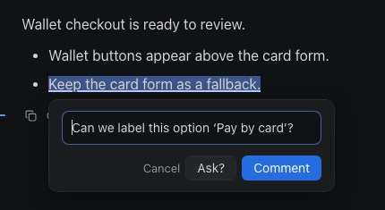
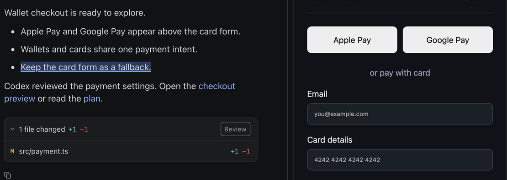

Give feedback on the work itself.
Select a line in an agent’s output and write your comment right beside it. Your feedback stays attached to the decision you want to revisit.

Work with Claude Code, Codex, and other coding agents in one place. Direct their work, explore the results, and stay in control.

Comment on this exact line. Select the sentence and tell the agent what to change. Skip “third bullet, second paragraph.”
The agent says it works. Try the checkout beside the chat, then ask for a fix while it’s in view.
Select a line in an agent’s output and write your comment right beside it. Your feedback stays attached to the decision you want to revisit.

Open a side conversation to investigate a question, like what happens when a customer cancels a wallet payment. The original checkout task stays open beside it.

Keep the agent’s explanation beside a preview or diff. Here, you can check that the card form is still there below the new wallet buttons.

Vector works with the Claude, Codex, and Cursor CLIs you already have installed, using your accounts, configuration, skills, and MCP servers.